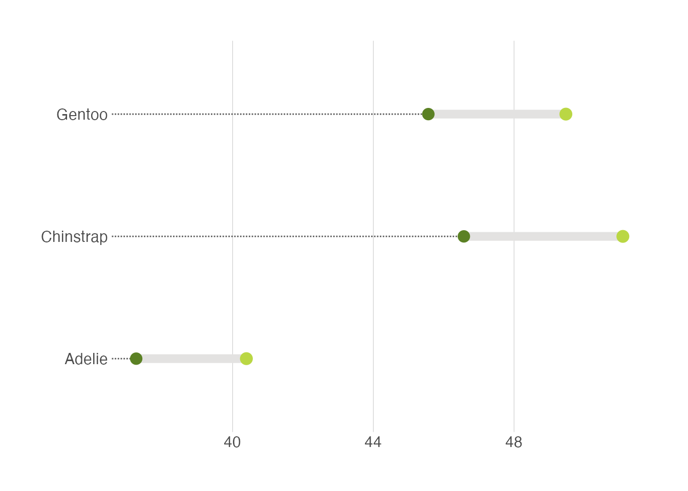

library(tidyverse)
library(tidylog)
library(palmerpenguins)
ggthemr::ggthemr("fresh")- 1
-
This tells R to use the
ggthemrpackage to style all the plots.
Visualizing amounts is a foundational task in data analysis. This tutorial covers best practices, common tools, and key considerations for effective visualizations.
Below we start, as always, let us load the packages we need:
library(tidyverse)
library(tidylog)
library(palmerpenguins)
ggthemr::ggthemr("fresh")ggthemr package to style all the plots.
Here we use the ggthemr package to style all the plots.
Bar plots are among the most straightforward ways to visualize the amount. We have all learnt it very early in school. They’re great when you have discrete categories—like species of penguins—and you want to compare their counts at a glance.
Tha task here is to visualize how many penguins belong to each species in the penguins dataset. Using what we have learned so far, we can do this in a few lines of code:
penguins_count <- penguins |>
group_by(species) |>
summarise(n = n()) |>
ungroup()species column.
group_by: one grouping variable (species)
summarise: now 3 rows and 2 columns, ungrouped
ungroup: no grouping variables remainWe use geom_bar(stat = "identity") with pre-aggregated data:
penguins_count |>
ggplot(aes(x = species, y = n)) +
geom_bar(stat = "identity")A very common mistake is to forget to add the stat = "identity" argument to the geom_bar() function. If you forget this argument, ggplot will automatically calculate the count of each category and plot it. While this may be useful in some cases, it is generally not recommended because it is not transparent.
You may think bar plot is so simple. Surprisingly, a recent study shows that almost one-third of biological papers use bar plots incorrectly. Thus, our job is not done yet. Below are a few techniques to make bar plots more informative and visually appealing.
It is useful to add the amount of each category to the bar plot. We can do this by adding a geom_text() layer to the plot.
penguins_count |>
ggplot(aes(x = species, y = n)) +
geom_bar(stat = "identity") +
geom_text(aes(label = n), size = 5,vjust = -0.5) +
coord_cartesian(clip = 'off')Two important things to note here:
vjust argument in geom_text() is used to adjust the vertical position of the text label.coord_cartesian(clip = 'off') function is used to ensure that the text label is not clipped when it extends beyond the plot area. This is an important trick to remember.It is helpful to reorder the bars in a bar plot. We can do this by using the reorder() function.
penguins_count |>
ggplot(aes(
x = reorder(species, n),
y = n
)) +
geom_bar(stat = "identity") +
geom_text(aes(label = n), size = 5, vjust = -0.5) +
coord_cartesian(clip = 'off') n column.
However, we do not always want to reorder the bars by the amount. For example, the categories are age distribution. When you want to reorder the bars by some manual order, you can use the fct_relevel() function.
penguins_count |>
mutate(species = fct_relevel(species, "Adelie", "Chinstrap", "Gentoo")) |>
ggplot(aes(x = species, y = n)) +
geom_bar(stat = "identity") +
geom_text(aes(label = n), size = 5, vjust = -0.5) +
coord_cartesian(clip = 'off') species column by the order of “Adelie”, “Chinstrap”, “Gentoo”.
mutate: no changes
For example, we can highlight the “Adelie” category by changing its color to red:
penguins_count |>
ggplot(aes(x = species, y = n, fill = species)) +
geom_bar(data = filter(penguins_count, species == "Adelie"),
stat = "identity", fill = "dodgerblue") +
geom_bar(data = filter(penguins_count, species != "Adelie"),
stat = "identity", fill = "grey") +
geom_text(aes(label = n), size = 5, vjust = -0.5) +
coord_cartesian(clip = 'off') We sometimes want to differentiate the bars as much as possible. One obvious way is to use different colors for each bar:
penguins_count |>
ggplot(aes(x = species, y = n, fill = species)) +
geom_bar(stat = "identity") +
geom_text(aes(label = n), size = 5, vjust = -0.5) +
MetBrewer::scale_fill_met_d("Hiroshige", direction=1)+
coord_cartesian(clip = 'off') However, colors are not the only way, especially when people may print the plot in black and white. One alternative is to use different patterns for each bar using the ggpattern package.
library(ggpattern)
penguins_count |>
ggplot(aes(x = species, y = n)) +
ggpattern::geom_col_pattern(
aes(pattern_fill = species,
pattern = species),
fill = 'white',
color = 'black'
) +
geom_text(aes(label = n), size = 5, vjust = -0.5) +
coord_cartesian(clip = 'off') +
theme(legend.position = "none")Since the bars are vertical, we do not need the vertical grid lines. We can change the theme of the plot by using the theme() function. Always think about what elements are redundant and remove them.
penguins_count |>
ggplot(aes(
x = reorder(species, n),
y = n
)) +
geom_bar(stat = "identity") +
geom_text(aes(label = n), size = 5, vjust = -0.5) +
coord_cartesian(clip = 'off') +
theme(
axis.line.x = element_line(colour = "grey", linewidth = 0.15),
panel.grid.major.x = element_blank(),
panel.grid.minor.x = element_blank(),
panel.grid.major.y = element_line(colour = "grey", linewidth = 0.15),
panel.grid.minor.y = element_blank(),
axis.ticks.x = element_line(colour = "grey", linewidth = 0.15),
axis.ticks.y = element_line(colour = "grey", linewidth = 0.15)
)We can also create horizontal bar plots. This is useful when the category is a long string (you can rotate the x-axis text but it is bad for readability). It is easy to do this by changing the x and y axis:
penguins_count |>
ggplot(aes(y = reorder(species, n), x = n)) +
geom_bar(stat = "identity") +
geom_text(aes(label = n), hjust = -0.3) +
coord_cartesian(clip = 'off') +
theme(
axis.line.y = element_line(colour = "grey", linewidth = 0.15),
panel.grid.major.x = element_line(colour = "grey", linewidth = 0.15),
panel.grid.minor.x = element_blank(),
panel.grid.major.y = element_blank(),
panel.grid.minor.y = element_blank(),
axis.ticks.x = element_line(colour = "grey", linewidth = 0.15),
axis.ticks.y = element_line(colour = "grey", linewidth = 0.15)
)Notice that we have removed the horizontal (instead of vertical) grid lines because they are redundant now.
Bar plots are not the only way to visualize the amount of different categories. A big issue with bar plots is that it has a low data-to-ink ratio (This is not a principle we have to follow always, but it is helpful to keep in mind). Dot plots are a (increasingly popular) alternative.
We can create a dot plot by adding a shrinked bar plot and then adding points to it:
penguins_count |>
ggplot(aes(y = reorder(species, n), x = n)) +
geom_bar(stat = "identity", width = 0.01) +
geom_point(size = 5) +
geom_text(aes(label = n), size = 5, vjust = -1) +
coord_cartesian(clip = 'off') +
theme(
axis.line.y = element_line(colour = "grey", linewidth = 0.15),
panel.grid.major.x = element_line(colour = "grey", linewidth = 0.15),
panel.grid.minor.x = element_blank(),
panel.grid.major.y = element_blank(),
panel.grid.minor.y = element_blank(),
axis.ticks.x = element_line(colour = "grey", linewidth = 0.15),
axis.ticks.y = element_line(colour = "grey", linewidth = 0.15)
) You can also use the geom_lollipop from the ggalt package to create lollipop plots.
Another trendy way to visualize the amount of different categories is to use circular bar plots.
penguins_count |>
ggplot(
aes(x = reorder(species, n),
y = n,
color = species,
fill = species
)
) +
geom_col(alpha = .5) +
scale_y_continuous(
limits = c(-50, 160)
) +
geom_hline(yintercept = 50, color = "grey", linewidth = 0.15) +
geom_hline(yintercept = 100, color = "grey", linewidth = 0.15) +
geom_hline(yintercept = 150, color = "grey", linewidth = 0.15) +
geom_text(aes(label = species), position = position_stack(vjust = 0.5), color = 'white') +
coord_polar() +
theme_void() +
theme(
legend.position = "none"
)It is also increasingly popular to use waffle charts to visualize the amount of different categories.
library(waffle)
ggplot(penguins_count, aes(fill=species, values=n)) +
geom_waffle(color = 'white') +
theme_void()library(ggpol)
penguins_count |>
ggplot() +
geom_parliament(aes(seats = n, fill = species), color = "black") +
scale_fill_manual(
values = MetBrewer::met.brewer("Isfahan2", direction=1),
labels = c("Adelie", "Chinstrap", "Gentoo")) +
theme_void()Warning: Using the `size` aesthetic in this geom was deprecated in ggplot2 3.4.0.
ℹ Please use `linewidth` in the `default_aes` field and elsewhere instead.How about multiple types of categories? Suppose we want to visualize the amount of penguins of different species and sex. Let us first count the number of penguins of each species and sex:
penguins_count_sex <- penguins |>
drop_na(sex) |>
group_by(species, sex) |>
summarise(n = n()) |>
ungroup()The most obvious way to visualize this is to use bar plots.
Stacked bar plots are a very common way to visualize the amount of different categories. However, they are hard to compare the trend of different categories.
penguins_count_sex |>
ggplot(aes(x = species, y = n, fill = sex)) +
geom_bar(stat = "identity") In contrast, one potential solution is to remove the y axis and just add the amount of each category:
penguins_count_sex |>
ggplot(aes(x = species, y = n, fill = sex)) +
geom_bar(stat = "identity") +
geom_text(
aes(label = n),
color = 'white',
size = 5,
position = position_stack(vjust = 0.5)) +
theme(
axis.line.y = element_blank(),
panel.grid.major = element_blank(),
panel.grid.minor = element_blank(),
axis.ticks.y = element_blank(),
axis.text.y = element_blank(),
axis.title.y = element_blank()
)An alternative to stacked bar plots is to plot the bars side by side. This is useful when you want to compare the trend within different categories.
penguins_count_sex |>
ggplot(aes(x = species, y = n, fill = sex)) +
geom_bar(stat = "identity", position = "dodge") You can also use other types (geoms) as well. For example, waffle charts.
penguins_count_sex |>
ggplot(aes(values = n, fill = sex)) +
geom_waffle(color = "white", size = .25, n_rows = 10, flip = TRUE) +
facet_wrap(~species, nrow = 1, strip.position = "bottom") +
scale_x_discrete() +
MetBrewer::scale_fill_met_d("Hiroshige", direction=1)Another useful alternative is to use the dumbell plot. It is quite similar to the lollipop plot. We will use the ggalt package to create the dumbell plot.
penguins |>
drop_na(sex) |>
group_by(species, sex) |>
summarise(mean_bill_length = mean(bill_length_mm, na.rm = TRUE)) |>
ungroup() |>
pivot_wider(names_from = sex, values_from = mean_bill_length) |>
ggplot(aes(x = female, xend = male, y = species)) +
ggalt::geom_dumbbell(size=3, color="#e3e2e1",
colour_x = "#5b8124", colour_xend = "#bad744",
dot_guide=TRUE, dot_guide_size=0.5) +
labs(x=NULL, y=NULL) +
hrbrthemes::theme_ipsum_rc(grid="X")